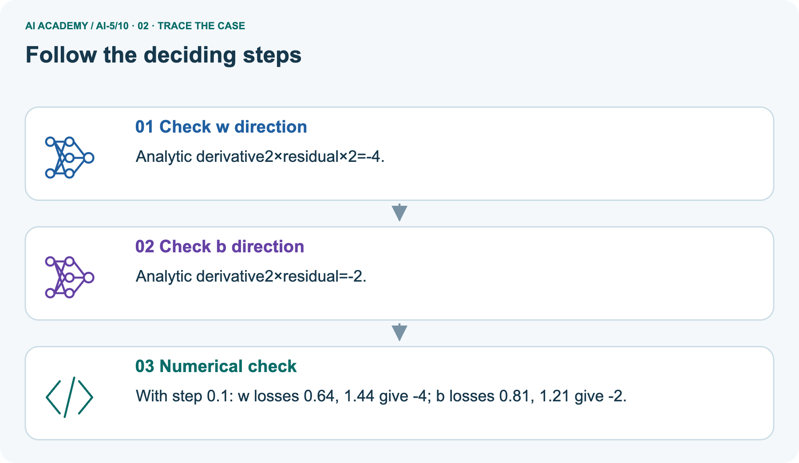
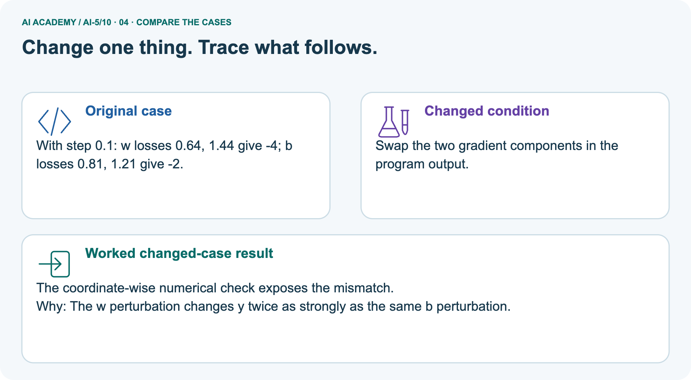
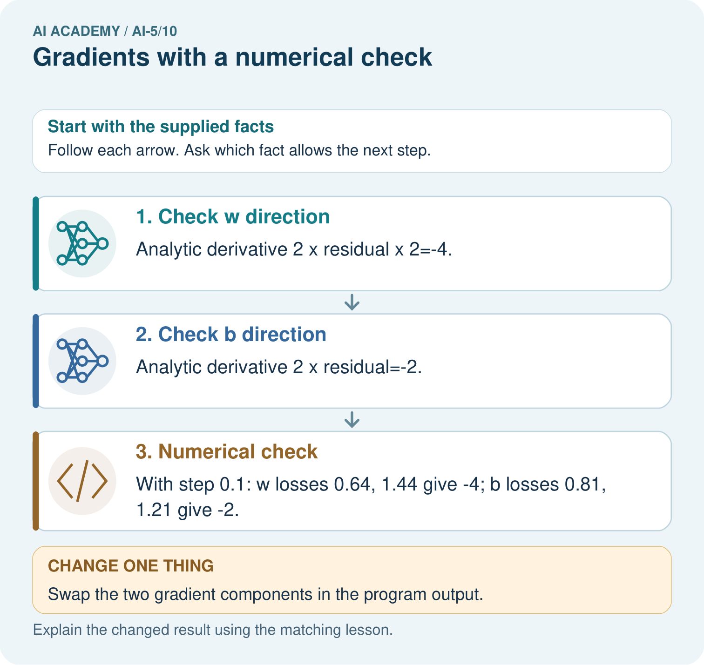
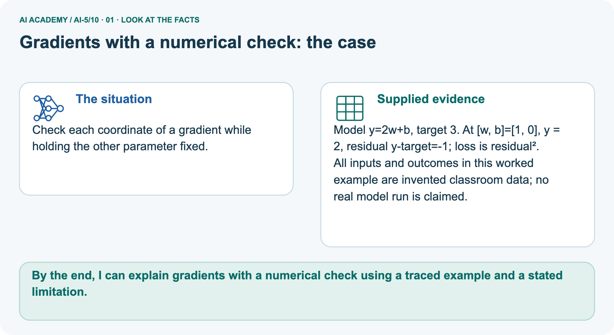
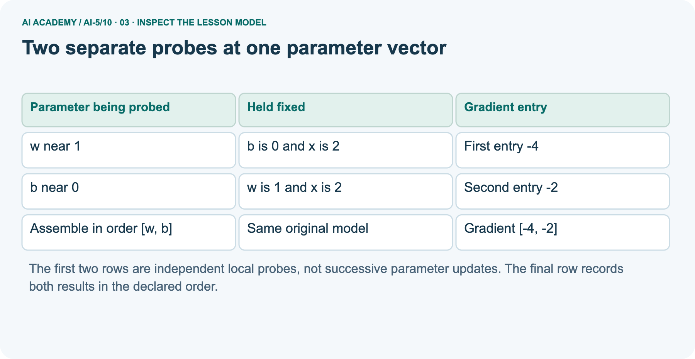
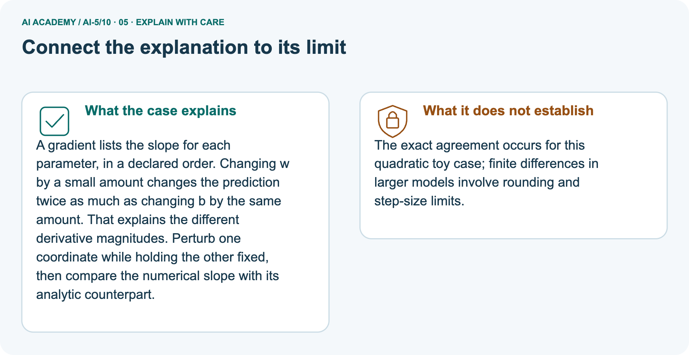

AI Academy · Level 5 · Grade 10 · Week 10 · Student lesson
Gradients with a numerical check
Learn to understand, design, build, test and explain AI systems responsibly.
Project: Image-pattern Network Investigation
THE CONNECTED WEEK
Perturb one coordinate. Hold the others. Label the gradient.
Check numerical and formula gradients while preserving centre,order,spacing and tolerance.
Keep one habit: Complete perturbation table → same-centre gradient → pictured component swap → direction/corner limits → independent new input/target.
Main lesson · Section 1
Which parameter did the slope measurement change?
Freeze the other coordinates and keep a declared gradient order.
Learning goals
I can estimate one partial derivative while other parameters stay fixed.
I can assemble a gradient in a declared parameter order.
I can compare numerical and formula based gradients with a tolerance.
Recall local loss change
Close your notes first. A rough first answer helps us choose the right starting point; it is not a score for your ability.
Without opening the old lesson, explain one key idea from Slopes and local change. Give an example and a mistake that the idea helps you avoid.
Without opening the old lesson, explain one key idea from Parameters and architecture. Give an example and a mistake that the idea helps you avoid.
Without opening the old lesson, explain one key idea from Activation functions. Give an example and a mistake that the idea helps you avoid.
After trying, check the relevant lesson or ask your teacher. Change the part of your explanation that the evidence shows was wrong.
Prerequisite and starting response
Why is the symmetric-slope denominator twice the step?
End goal
By the end, I can explain gradients with a numerical check using a traced example and a stated limitation.
Earlier wording, alternatives and picture transcripts
Your learning target
Remember before reading
This week you will practise:
Estimate one partial derivative while other parameters stay fixed
Assemble a gradient in a declared parameter order
Compare numerical and formula based gradients with a tolerance
Retrieve what you already know
This week’s end goal
Main lesson · Section 2
One loss,two parameter directions
Each partial slope belongs to the same original parameter vector.
Declare input,target,loss and parameter order
Use one example with input x = 2 and target t = 3. The model predicts y = wx + b, and loss L(w, b) = (2w + b - 3) squared. At w = 1, b = 0, prediction is 2, residual is -1 and loss is 1.
There are two parameters in order [w, b].
To estimate the partial slope for w, change w only and keep b = 0. To estimate the partial slope for b, change b only and keep w = 1.
Moving both at once measures change along a combined direction; it does not isolate either partial derivative.
Complete two-coordinate symmetric estimates
| Perturbation from [1, 0] | Loss at minus step | Loss at plus step | Symmetric slope |
|---|---|---|---|
| w only with step 0.1 | 1.44 | 0.64 | -4 |
| b only with step 0.1 | 1.21 | 0.81 | -2 |
Assemble the gradient in order[w,b]
The gradient is [-4, -2] in order [w, b]. Both entries refer to the same original parameter vector, not to a partially updated model.
Name given and missing facts
Main lesson · Section 3
See every parameter vector used by the checker
The two coordinate probes and the combined direction are different experiments.
Complete individual and combined perturbation table
| Main probe from centre[w, b]=[1, 0] | Minus parameter vector /prediction /loss | Plus parameter vector /prediction /loss | Full gap in probe variable | Slope |
|---|---|---|---|---|
| w only; hold b0 | [.9, 0]/1.8/1.44 | [1.1, 0]/2.2/.64 | 0.2 | -4 |
| b only; hold w1 | [1, −.1]/1.9/1.21 | [1, .1]/2.1/.81 | 0.2 | -2 |
| Both via t:[w, b]=[1+t, t] | [.9, −.1]/1.7/1.69 | [1.1, .1]/2.3/.49 | 0.2 | -6 |
Formula,coordinate order and numerical contract
For this one-example squared loss, residual e=2w+b−3. The formula gradient is[2e×2, 2e]=[4e, 2e]in parameter order[w, b]. At the original[1, 0], e−1 gives[−4, −2]. Each numerical entry changes one coordinate while the other stays at its original value. The combined probe varies t along[1+t, t]; its slope−6is with respect to t, not either partial or slope per unit Euclidean distance.
The checker uses spacing.001 and absolute tolerance 1e−6; it assumes valid finite numbers and positive spacing rather than validating them.
The helper assumes finite numerical inputs and a positive nonzero step. The formula follows the squared-loss rule: local loss change is twice the residual times the prediction sensitivity.
Changing w by a small amount changes prediction twice as much here; changing b changes prediction by the same amount.
Exact floating-point equality is not required. Record the step and a tolerance, then try more than one parameter setting.
A passing numerical check supports agreement for those tested points; it does not prove all possible inputs.
Complete runnable numerical/formula comparison
def loss(w, b):
return (2 * w + b - 3) ** 2
def gradient_check(w, b, step=0.001):
dw = (loss(w + step, b) - loss(w - step, b)) / (2 * step)
db = (loss(w, b + step) - loss(w, b - step)) / (2 * step)
residual = 2 * w + b - 3
formula = [4 * residual, 2 * residual]
numerical = [dw, db]
assert all(abs(a - n) < 1e-6
for a, n in zip(formula, numerical))
return numerical
print([round(g, 6) for g in gradient_check(1, 0)])
# [-4.0, -2.0]Connect visual steps to their perturbed coordinate
Point to the input, the deciding step and the result in this week’s visual. Explain the same step in ordinary words. A picture helps when you can say what each part represents.
Earlier wording, alternatives and picture transcripts
Connect the picture and the explanation
Main lesson · Section 4
Compare a partial check with a reordered gradient
A correct pair of numbers still needs the correct coordinate labels.
Current full-denominator task
A w probe has losses 1.44 and 0.64 at 0.9 and 1.1 with b fixed. A learner divides their difference by 0.1. Correct the result.
Predict the pictured component swap
Change: Swap the two gradient components in the program output.
Check after predicting
Prediction: The coordinate-wise numerical check exposes the mismatch.
Reason: The w perturbation changes y twice as strongly as the same b perturbation.
Earlier wording, alternatives and picture transcripts
Compare a familiar case with a changed case
Change one thing in the pictured case
Main lesson · Section 6
Match each gradient entry to the coordinate that was perturbed
Hold the other parameter fixed through both nearby evaluations.
Complete picture facts and same-model scope
Check each coordinate of a gradient while holding the other parameter fixed.
Model y=2w+b, target 3. At [w, b]=[1, 0], y = 2, residual y-target=-1; loss is residual².
All inputs and outcomes in this worked example are invented classroom data; no real model run is claimed.
The picture uses the same model y=2w+b, target 3, centre[1, 0], residual−1. With step.1, w-only minus/plus losses 1.44/.64 give−4; b-only losses 1.21/.81 give−2. Order[w, b]therefore gives[−4, −2]. Returning[−2, −4]mislabels both entries even though the numbers look familiar.
The fixed x2 makes w twice as sensitive as b here; the independent exercise supplies x3 and a different target, so its formula must use that new input.
Trace both partials and numerical comparison



Read the picture one step at a time
A gradient lists the slope for each parameter, in a declared order. Changing w by a small amount changes the prediction twice as much as changing b by the same amount. That explains the different derivative magnitudes.
Perturb one coordinate while holding the other fixed, then compare the numerical slope with its analytic counterpart.
Predict the reordered output
Change one thing: Swap the two gradient components in the program output. Predict the result before checking the explanation. What remains the same?
Check after predicting



Explain coordinate isolation and numerical limits
The exact agreement occurs for this quadratic toy case; finite differences in larger models involve rounding and step-size limits.
Read the labelled picture: Why should the numerical checks perturb one coordinate at a time? Point to the relevant step in the picture, then write the changed result and the rule or evidence that supports it.
Try a different main-model centre
Two separate probes at one parameter vector
Earlier wording, alternatives and picture transcripts
Learn from the worked case
Cover the result before checking it. Say what is given, choose the procedure, and follow one step at a time. Then uncover the result and explain your first mismatch. Ask why a step is allowed, not only what number it produces.
A pictorial worked case: Gradients with a numerical check
The facts we will use



Why this result follows
What this example does not establish
Main lesson · Section 7
Repair checks that cross a corner or move both coordinates
A symmetric number is not automatically a derivative of the intended kind.
ReLU corner and precision counterexamples
ReLU is not differentiable exactly at zero. A symmetric difference across that corner can average two different behaviours.
When checking a network gradient, use points whose relevant scores are safely away from zero, and check that the small perturbations do not cross a corner. Document any derivative convention used at zero.
At the centre of the simple scalar ReLU function, [ReLU(0.1) - ReLU(-0.1)] / 0.2 equals 0.5. This symmetric number does not make the function differentiable at zero.
Also avoid assuming an ever-smaller step is always better: subtraction and rounding can spoil numerical differences.
Compute the combined-direction probe
Starting at [w, b] = [1, 0], both coordinates move by plus or minus 0.1 together. Compute the symmetric slope and explain why it is not either partial derivative.
Earlier wording, alternatives and picture transcripts
Locate the earliest unsupported step
Main lesson · Section 8
Practise coordinate-isolated reasoning with less help
Keep centre,spacing,held coordinate and tolerance in the record.
Current task and response
For the lesson model at w = 1 and b = 1, calculate prediction, residual, loss and gradient.
Supported W2record
Use workbook W2 for the connected example “Gradients with a numerical check”. First fill the input and rule boxes. Try the middle steps before asking for a hint. After a hint, try the next step yourself.
| Plan | Do | Check |
|---|---|---|
| What is given? Which rule or procedure applies? | Record each intermediate step. | Does the result follow? What remains unknown? |
Explain your trace to a partner. Your partner points to one step to check. Swap roles on the next case. Each person writes their own explanation.
Individual misconception check
Use the worked case for Gradients with a numerical check. Proposed explanation: “The gradient is one scalar”. Decide whether this explanation is supported.
Point to the step or supplied fact that decides; explain your repair if needed.
Answer on your own before discussion. If you are unsure, say which step you need help with.
Pictured one-coordinate reasoning
Why should the numerical checks perturb one coordinate at a time? Point to the relevant step in the picture, then write the changed result and the rule or evidence that supports it.
Reserve the independent new input/target
This is supported practice. Keep the separately named independent case for an attempt before feedback.
Earlier wording, alternatives and picture transcripts
Practise with less help: Catch a denominator error
Check your reasoning
Explain the picture
Main lesson · Section 9
Run a complete labelled-coordinate check clinic
Every centre,loss,spacing and counterexample is supplied.
Current denominator task and runnable checker
A w probe has losses 1.44 and 0.64 at 0.9 and 1.1 with b fixed. A learner divides their difference by 0.1. Correct the result.
def loss(w, b):
return (2 * w + b - 3) ** 2
def gradient_check(w, b, step=0.001):
dw = (loss(w + step, b) - loss(w - step, b)) / (2 * step)
db = (loss(w, b + step) - loss(w, b - step)) / (2 * step)
residual = 2 * w + b - 3
formula = [4 * residual, 2 * residual]
numerical = [dw, db]
assert all(abs(a - n) < 1e-6
for a, n in zip(formula, numerical))
return numerical
print([round(g, 6) for g in gradient_check(1, 0)])
# [-4.0, -2.0]Complete normal,zero,invalid,directional and corner probes
| Complete gradient-check probe | Expected answer / action |
|---|---|
| Normal main centre[1, 0] | y2, e−1, L1, gradient[−4, −2] |
| Different centre[0, 1]samex 2, target 3 | y1, e−2, L4, gradient[−8, −4] |
| Zero-residual centre[1, 1] | y3, e0, L0, gradient[0, 0]for this loss |
| Wrong spacing divisor.1 forw probes.9/1.1 | Correct fullgap.2, partial−4 rather than−8 |
| Missing coordinate or step 0 | Outside stated finite-number/positive-spacing contract; validate before calling, not a claimed helper guard |
| Both coordinates move together via t | Losses1.69/.49 over.2 give−6 along[1+t, t], not either partial |
| ReLU corner at0, h.1 | [ReLU(.1)−ReLU(−.1)]/.2=.5; function still has no derivative at0 |
| Same gradient values returned in wrong order | Compare each entry with its labelled numerical perturbation; swapped[−2, −4]fails here |
Predict,check,record and bound the claim
Predict each supplied smooth-model gradient, then run or trace the checker at all three centres with a positive finite spacing. Save numerical values, formula values, coordinate order, spacing, tolerance and observed differences. The original checker asserts numerical/formula agreement but does not validate missing coordinates or zero spacing; screen inputs first.
Trace the combined-direction and ReLU-corner examples separately. A passing check at these points supports this computation only; it does not prove global correctness, choose a safe update size or establish generalization.
On paper, trace the supplied procedure. If code is provided, predict before running it in a local practice file. Never write an expected answer as though it were an observed run.
Keep the evidence ledger
| Record | Your evidence |
|---|---|
| Given input and fixed rule | |
| Prediction before checking | |
| Actual result, or “not run” | |
| First mismatch and one explanation | |
| Boundary or missing input and expected response |
Before trying: what do I expect, and why? While trying: which step could first go wrong? Afterwards: what did I actually observe, and what should change? Keep “not run” if you only traced the procedure.
Earlier wording, alternatives and picture transcripts
Predict, investigate and preserve the evidence
Plan → try → check
Main lesson · Section 14
Try alone: a different input,target and parameter centre
Use the supplied x and residual in both numerical and formula gradients.
Complete new independent gradient check
Use x = 3, target 2 and y = wx + b at w = 0, b = 1. With step 0.1, calculate both numerical partials. Compare with [2 times residual times x, 2 times residual].
First attempt and support record
Attempt this case before feedback. Record any help. Earlier examples below are further practice; a case already practised with feedback cannot establish fresh transfer.
Use feedback after trying
Attempt the independent case before hints. Record whether you worked alone, used a hint or followed a model. After feedback, fix the first unsupported step and explain why it changed.
A later check uses a changed case, not a copied answer.
Earlier wording, alternatives and picture transcripts
Independent case: Check a new example independently
Attempt this without hints
Use x = 3, target 2 and y = wx + b at w = 0, b = 1. With step 0.1, calculate both numerical partials. Compare with [2 times residual times x, 2 times residual].
Record support used: none, hint or teacher explanation. After feedback, a different case is needed to demonstrate independence.
Use feedback to improve
Main lesson · Section 11
Save the gradient with its coordinate contract
A reader should be able to repeat each partial probe.
Project artifact and evidence table
Add a labelled gradients with a numerical check evidence sheet to Image-pattern Network Investigation. Show how you can estimate one partial derivative while other parameters stay fixed.
Use the supplied fictional case and keep its inputs, intermediate steps, calculation or prediction, and limitation. Connect this record to last week’s record; a matching answer without a trace is insufficient.
| Project evidence | Record |
|---|---|
| Component and version | |
| Inputs permitted at prediction time | |
| Trace and comparison with earlier work | |
| Failure, limit and human review |
Actual run/trace and limits
For your Image-pattern Network Investigation, save the input, procedure, observed result and limitation of this check.
Label this worked example as practice; use a different, previously unreviewed case when checking independent understanding.
Earlier wording, alternatives and picture transcripts
Evidence for your project
Main lesson · Section 16
Finish with one coordinate-labelled partial and one limit
Explain what stayed fixed and what the passing check supports.
Retrieve and explain
Close your notes. Explain this goal in your own words: Estimate one partial derivative while other parameters stay fixed
Plan a changed-case return
If you are unsure, return to the worked picture and explain one arrow. If you are ready, change an input or assumption and justify your prediction.
Save your workbook evidence. At the next review, try a different case before opening your old answer.
Reference bank and extra practice
Choose the reference that helps your next step.
Reference · Use the mathematical words precisely
Reference · Section 5
Reference · Use the mathematical words precisely
Connect each term to a value or step in the current example.
Vocabulary and your explanation
| Word | Meaning |
|---|---|
| Partial derivative | A local slope with respect to one parameter while others are held fixed |
| Gradient | The ordered vector of partial derivatives of a scalar function |
| Finite difference | An estimate of change computed from nearby function values |
| Tolerance | A stated allowance for numerical disagreement |
Extra challenge · Explain a stronger case
Reference · Section 10
Extra challenge · Explain a stronger case
Choose the next challenge after the main route.
Explain,repair and extend
For the lesson model at w = 1 and b = 1, calculate prediction, residual, loss and gradient.
Starting at [w, b] = [1, 0], both coordinates move by plus or minus 0.1 together. Compute the symmetric slope and explain why it is not either partial derivative.
Compute the symmetric difference of ReLU at zero with step 0.1. Explain why this does not prove a derivative exists there.
Explain → apply → challenge
Reference · Check the representation and its limits
Reference · Section 12
Reference · Check the representation and its limits
Use after practice;reserve the new independent x3,target2gradient check for the first individual attempt.
Current explanation and response
The gradient describes how the stated loss changes near the current parameters. For a differentiable function, moving a sufficiently small distance opposite a nonzero gradient decreases the function locally.
The gradient alone does not choose a safe finite step, establish a global minimum or demonstrate generalisation.
Next week combines a gradient with an explicit learning rate to update parameters together.
Compute the symmetric difference of ReLU at zero with step 0.1. Explain why this does not prove a derivative exists there.
Extra practice · Revisit the complete trace
Reference · Section 13
Extra practice · Revisit the complete trace
Predict before reading the supplied steps.
Complete trace and evidence
Complete evidence record
Two separate probes at one parameter vector
Follow the input through the stated procedure to its result. Cover the result first, predict it, then explain every intermediate step. The text/table accompanies the figure so the example can be read without colour.
Reference · The earlier route checklist
Reference · Section 15
Reference · The earlier route checklist
Use one main route rather than repeating the lesson.
Targets,route and first prediction
Start with this question: Check each coordinate of a gradient while holding the other parameter fixed.
| By the end, I can | How I will show it |
|---|---|
| Estimate one partial derivative while other parameters stay fixed | Explain the deciding step, show a trace or test, and state one limit. |
| Assemble a gradient in a declared parameter order | Explain the deciding step, show a trace or test, and state one limit. |
| Compare numerical and formula based gradients with a tolerance | Explain the deciding step, show a trace or test, and state one limit. |
Remember → watch and explain → try with help → investigate → try independently → keep project evidence. Your teacher may spread this lesson across several classes.
Keep your first prediction. Compare it with what the evidence shows and explain any change.
Extra practice · Predict,check and repair
Reference · Section 17
Extra practice · Predict,check and repair
Keep supported feedback separate from the independent case.
First supported question and optional hint
Check each coordinate of a gradient while holding the other parameter fixed.
Which labelled step matches this detail? With step 0.1: w losses 0.64, 1.44 give -4; b losses 0.81, 1.21 give -2.
1. Numerical check
2. Check b direction
3. Check w direction
Hint if needed: Read the steps in the pictorial case. Match the supplied detail to the stage that performs or records it.
Practice 1: explain the deciding evidence
Check after the first attempt
After your attempt, compare with the supported explanation: Numerical check With step 0.1: w losses 0.64, 1.44 give -4; b losses 0.81, 1.21 give -2. A gradient lists the slope for each parameter, in a declared order.
Changing w by a small amount changes the prediction twice as much as changing b by the same amount. That explains the different derivative magnitudes.
Perturb one coordinate while holding the other fixed, then compare the numerical slope with its analytic counterpart.
Changed-case question and optional hint
Changed-case practice: Swap the two gradient components in the program output. Which conclusion is supported by the supplied facts?
1. This one example guarantees correct results for every future input.
2. The coordinate-wise numerical check exposes the mismatch.
3. We can decide the result without examining the changed input or the procedure.
Hint if needed: Use the changed condition and the deciding step in the pictorial trace. The answer must say what follows from those facts.
Practice 2: explain the deciding evidence
Check after the changed attempt
After your attempt, compare with the supported explanation: The coordinate-wise numerical check exposes the mismatch. The w perturbation changes y twice as strongly as the same b perturbation.
Repair and retain the record
Review Slopes and local change (ai-5/9). Goal: Calculate an average rate of change over a stated interval. Short practice: Which calculation disproves “any increase helps”?
Point to the relevant step in the picture, then write the changed result and the rule or evidence that supports it.. Return to this week and explain what you changed.
Review Parameters and architecture (ai-5/7). Goal: Distinguish architectural choices from parameter values. Short practice: How many new parameters did that one hidden unit add?
Point to the relevant step in the picture, then write the changed result and the rule or evidence that supports it.. Return to this week and explain what you changed.
Review Activation functions (ai-5/4). Goal: Trace identity ReLU and sigmoid on a numerical score. Short practice: Which original inputs cannot be distinguished by this network’s final output?
Point to the relevant step in the picture, then write the changed result and the rule or evidence that supports it.. Return to this week and explain what you changed.
The browser lab lets you edit the supported Python examples already included in this lesson. Predict first, run, inspect the actual output or error, change one input, then run again.
Keep code, predictions, actual results and a reasoned revision together. On paper, label your result as a trace rather than an execution.
Use Download completed work in the hosted lesson to export your answers, reflections, practice feedback and code-run evidence. Open the HTML copy to read or print it.
Drafts stay in this browser when storage is available; clear drafts on a shared device.
Earlier wording, alternatives and picture transcripts
Use this supported practice once, in the browser or on paper. Keep the reserved independent assessment for a separate first attempt before teacher feedback.
Repair a missing building block
Predict, run and debug
Keep your completed work
Reference · Six-picture concept journey
Reference · Section 18
Reference · Six-picture concept journey
Choose the picture that supports the current explanation.
01. Gradients with a numerical check: the case



Check each coordinate of a gradient while holding the other parameter fixed. Supplied facts: Model y=2w+b, target 3. At [w, b]=[1, 0], y = 2, residual y-target=-1; loss is residual².
All inputs and outcomes in this worked example are invented classroom data; no real model run is claimed.
Point to the given fact that matters most. Explain why it matters.
02. Follow the deciding steps
Check w direction: Analytic derivative 2×residual×2=-4. → Check b direction: Analytic derivative 2×residual=-2. → Numerical check: With step 0.1: w losses 0.64, 1.44 give -4; b losses 0.81, 1.21 give -2.
Point to each numbered stage and explain which recorded input it uses.
03. Two separate probes at one parameter vector



Two separate probes at one parameter vector. w near 1 | b is 0 and x is 2 | First entry -4. b near 0 | w is 1 and x is 2 | Second entry -2. Assemble in order [w, b] | Same original model | Gradient [-4, -2]
Read the labels and values. Explain the relationship the model shows.
04. Change one thing. Trace what follows.
Original case: With step 0.1: w losses 0.64, 1.44 give -4; b losses 0.81, 1.21 give -2. Changed condition: Swap the two gradient components in the program output.
Expected result: The coordinate-wise numerical check exposes the mismatch. Reason: The w perturbation changes y twice as strongly as the same b perturbation.
Predict before checking the worked changed-case result. Name what changed and what the supplied facts allow you to conclude.
05. Connect the explanation to its limit



A gradient lists the slope for each parameter, in a declared order. Changing w by a small amount changes the prediction twice as much as changing b by the same amount. That explains the different derivative magnitudes.
Perturb one coordinate while holding the other fixed, then compare the numerical slope with its analytic counterpart.
Limit: The exact agreement occurs for this quadratic toy case; finite differences in larger models involve rounding and step-size limits.
Explain the case, then point to a limit on the claim.
06. Make the idea visible in your project


For your Image-pattern Network Investigation, save the input, procedure, observed result and limitation of this check.
Label this worked example as practice; use a different, previously unreviewed case when checking independent understanding. Draw your input, deciding step, result and limit.
Supported question: Why should the numerical checks perturb one coordinate at a time? Point to the relevant step in the picture, then write the changed result and the rule or evidence that supports it.
Draw your project trace and justify the deciding step using evidence.